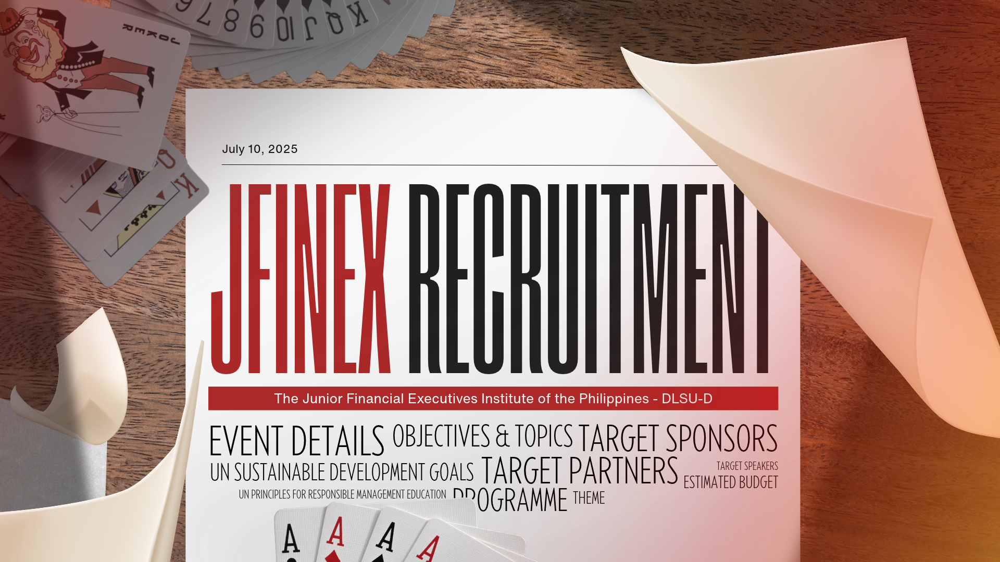
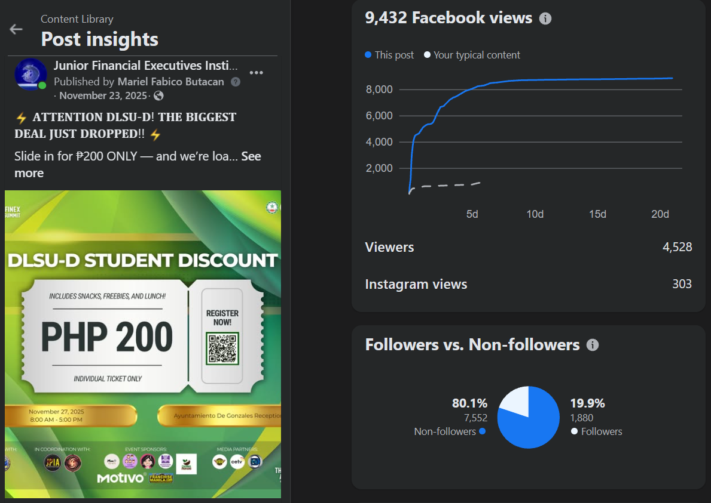
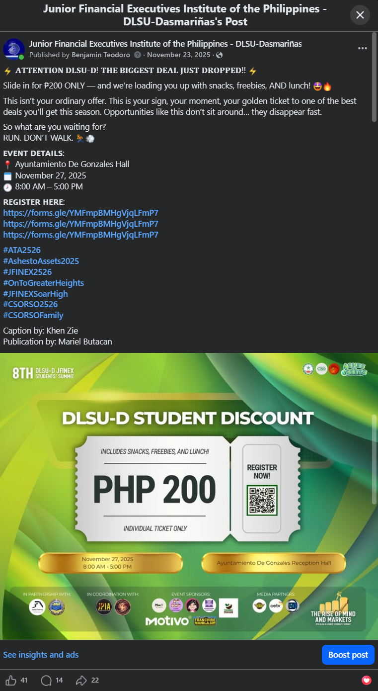
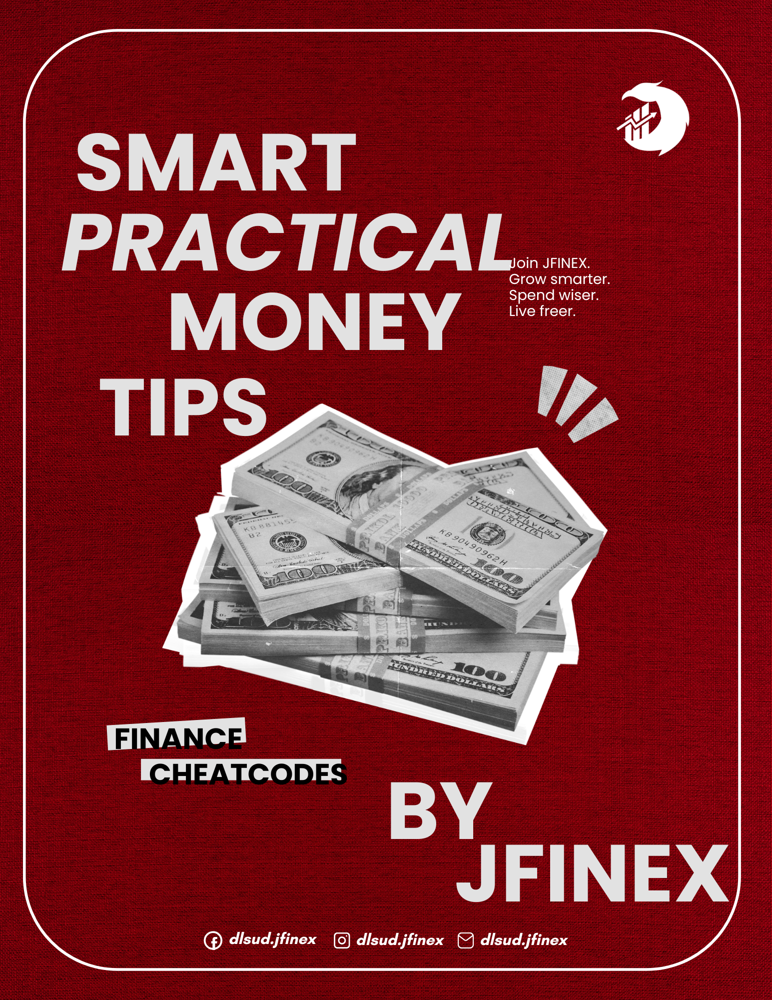
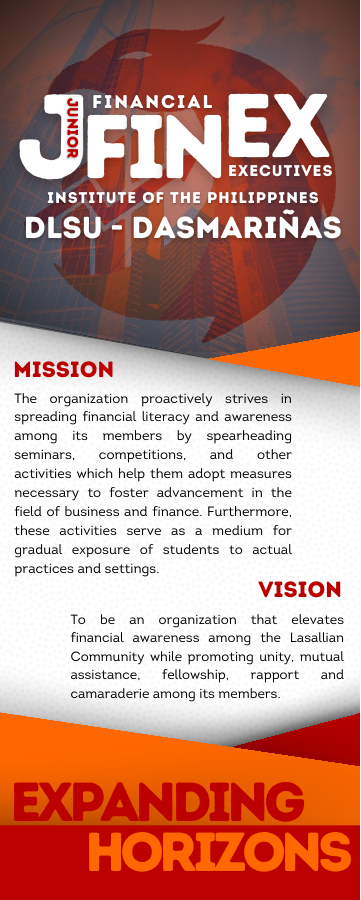
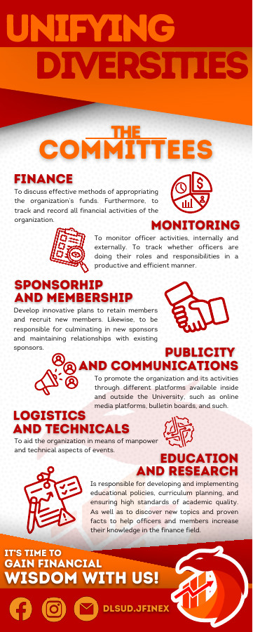
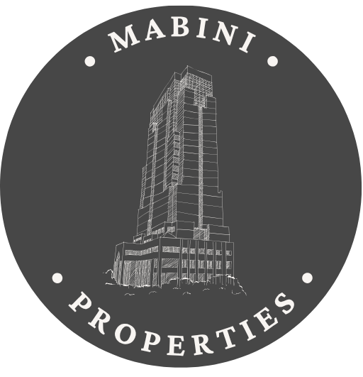
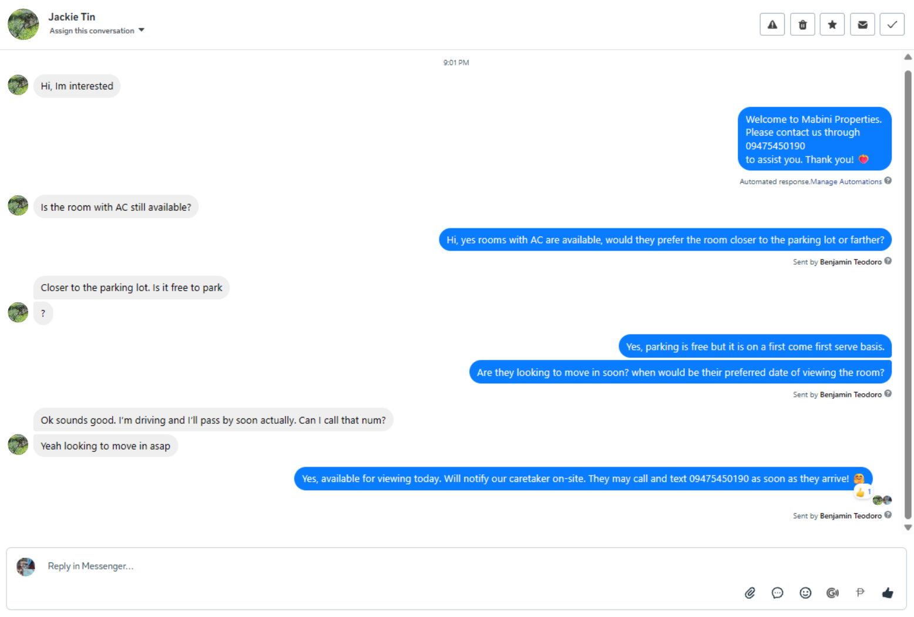

01 / Recruitment creative
JFINEX recruitment
A playing-card concept and prominent headline introduce recruitment with a distinctive visual theme.
View full image ↗Social Media & Customer Relations Assistant
I’m Benjamin, based in the Philippines. I combine hands-on social media experience with patient customer communication and a practical approach to performance analysis.

JFINEX, DLSU-D
Mabini Properties
MID Construction Group
01 / Content performance
A JFINEX student-event promotion, examined through the original post and Meta’s recorded insights.
Junior Financial Executives · DLSU-D · Published November 23, 2025
Source: Meta Post-Insights Screenshot
Meta attributes 7,552 views to non-followers and 1,880 to followers. That makes discovery the clearest signal in this snapshot.
The plotted curve rises sharply in the first few days, then flattens. I would compare early responses and publishing context across similar posts before choosing a repeatable timing strategy.
These figures do not establish registrations or sales. I would pair views with link clicks, relevant inquiries, and completed registrations to understand whether attention became action.

The post places a ₱200 student offer, inclusions, event details, and registration links in front of a defined campus audience. The specific price and benefits give viewers something concrete to act on.
I contributed captions and design, led the event, and used trend analysis to support organic reach and engagement.
I published and led the post, with publication assistance from Mariel and caption assistance from Khen.
Open source post ↗
Across the displayed custom range
Video viewing metric
Video viewing metric
Source: Facebook Dashboard Capture
More selected work / Design & creation
Recruitment, financial-literacy messaging, and print design.

01 / Recruitment creative
A playing-card concept and prominent headline introduce recruitment with a distinctive visual theme.
View full image ↗
02 / Financial-literacy creative
Strong typographic hierarchy, a focused message, and consistent branding connect money topics with a student audience.
View full image ↗

03 / Print design · 2-page PDF
A coordinated two-sided layout introduces the organization, explains its committees, and invites students to join.
View front & back PDF ↗These demonstrate visual communication and content creation; the page-level dashboard totals are not attributed to just these individual pieces.
02 / Customer relations
Customer conversations are also audience research. They reveal what is unclear, what matters to people, and where the next piece of content could help.

Mabini Properties · Marketing & Social Media Assistant · Oct 2023–Dec 2024
Designed logo | 2023
An anonymized summary of the supplied Meta Business Suite conversation.
A prospect asked about an air-conditioned room. I confirmed availability and asked which room location they preferred.
When asked about parking, I explained that it was free and available on a first-come, first-served basis.
I asked about the viewing date and move-in timing, then explained how to contact the on-site caretaker.
Tag inquiries about air conditioning, parking, viewing times, and move-in dates. If those themes recur, suggest an FAQ post or saved reply, then personalize the follow-up.
In practice / Meta Business Suite
The actual inquiry shows an automated welcome followed by replies attributed to me, answering the prospect’s questions and coordinating a viewing.

The welcome message identifies Mabini Properties, provides a contact number, and acknowledges the inquiry before the personal exchange. It handles a repeatable opening; the specific room and parking questions receive individual replies.
I confirm the air-conditioned room’s availability and ask about the prospect’s preferred location. Follow-up questions about viewing and move-in timing keep the conversation focused on their needs.
I clarify that free parking is first-come, first-served, then explain the caretaker handoff. Clear conditions and a practical next step help the prospect make an informed decision.
MID Construction Group / U.S. outreach
“Drive safely. I will follow up with you later today.”
In the supplied call case study, a prospect was interested but driving. I ended the pitch, called back later, and offered to email a scheduling link after they confirmed continued interest.
Why it matters: recognize context, avoid pressure, keep the commitment, and make the next action simple.
Written case-study transcript; not a call recording. The follow-up led to a booked appointment.
Read the supplied case study ↗Email case study / MID Construction Group
A three-message exchange about building-permit assistance: I reopened the conversation with a clear meeting purpose, offered a convenient way to schedule, and confirmed the prospect’s chosen time.
“Thanks for following up. I just booked the Thursday at 2:00 PM slot.”
The email thread shows the booking response and my confirmation of the same appointment time.
01 / Personalized follow-up
I followed up on the prospect’s pending permits and explained what a meeting would cover: current status, outstanding requirements, and next steps.
The Calendly link makes scheduling straightforward, while the invitation to suggest another time keeps the response flexible and considerate.

02 / Prospect’s reply
The prospect confirmed they still needed assistance, thanked me for following up, and stated that they had booked Thursday at 2:00 PM.
This reply gives a concrete outcome for the exchange: an appointment booking rather than interest alone.

03 / Appointment confirmation
I acknowledged the booking and repeated the agreed day and time. A brief confirmation keeps the next step clear without adding unnecessary information.
The personal greeting, warm sign-off, and consistent business signature maintain a professional, approachable tone throughout.

Relevant follow-ups, a clear reason to respond, flexible scheduling, and reliable confirmation—carried through with a warm, professional voice.
03 / How I would support the owner
A proposed working approach for a coaching business, connecting day-to-day replies with useful content decisions.
Review comments and messages. Answer in the owner’s voice, personalize the response, and record recurring questions. Escalate sensitive concerns with a concise summary.
Log the topic, opening hook, format, date, platform, views, and available retention or click metrics. Compare similar posts using the same observation window.
Send a brief recap: what performed, what customers asked, and one next test. Shortlist relevant trends or products and explain their fit before suggesting content.
04 / Supporting content sample
A semester recap showcasing the events I led and helped bring to life through coordination. I was a core editor and also filmed the ending scene.
Let’s talk
I’d welcome a conversation about supporting your community and helping you understand what your audience responds to.
Email Benjamin View résumé ↗